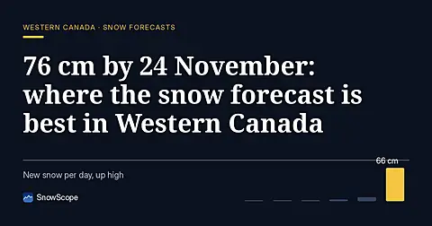
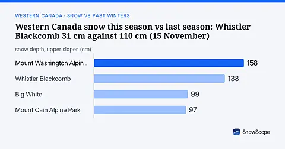
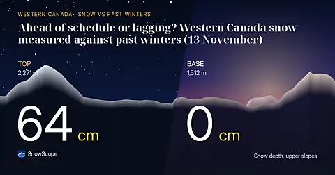
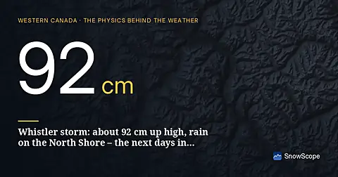
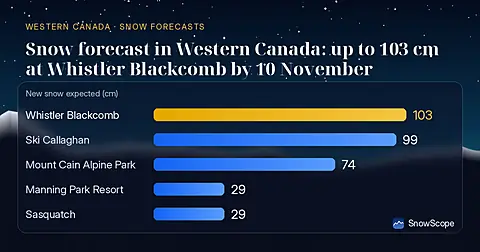
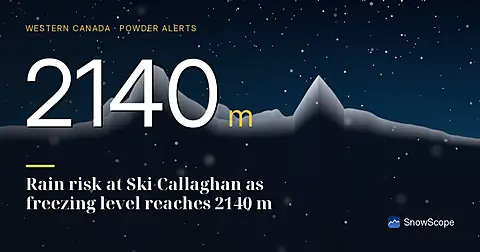
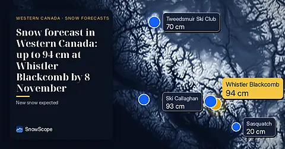
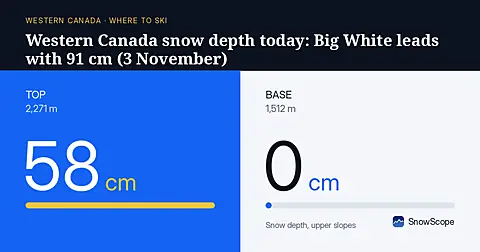

Snow reports · Western Canada
Western Canada: The early-winter snowpack in Western Canada is building unevenly, and height makes all the difference. The snow map in Western Canada …
Western Canada snowpack check: Whistler Blackcomb holds the deepest cover, 153 cm (22 November)

The early-winter snowpack in Western Canada is building unevenly, and height makes all the difference. The snow map in Western Canada shows 398,620 km² of white ground today and snow at 52 of 57 resorts.
Depth today, by the numbers
Snow-covered area: 399,700 km² on 20 November, 398,620 km² today, 385,170 km² forecast for 25 November. The map is getting less white.
Three heights at Whistler Blackcomb, three numbers: 114 cm at the top (2,259 m), 51 cm at mid-mountain (1,456 m), 4 cm at the base (653 m).

The early-winter snowpack in Western Canada is building unevenly, and height makes all the difference.

Whistler Blackcomb will receive 101 cm of new snow by November 25, far exceeding early-season norms. Mount Cain Alpine Park leads the region with 132 cm forecast.

Mount Washington Alpine Resort forecast to receive 359 cm of new snow in the next 14 days, with the heaviest falls in week one. Data from 22 November 2026.

Our two-week maps show where new snow should fall in Western Canada between 22 November and 5 December, from the two forecasts that reach two …

Up to 76 cm: that is what our forecast gives Mount Washington Alpine Resort by 24 November. And more is coming: by 24 November, the forecast brings …

150 cm on the upper slopes: that is why Whistler Blackcomb heads our list. Snow on the ground, snow from the last 72 hours, snow still to come: …


Mount Washington Alpine Resort snow report: 104 cm up top (Western Canada, 18 November). At 1,456 m on Whistler Blackcomb the season is late: our …

Freezing level reaches 1,500 m at Banff Sunshine Village on November 19. Fresh snow fell across Western Canada in the last 72 hours, but rain threatens the new powder.

Western Canada forecast: 90 cm new snow at Mount Washington in the next two weeks, with 70 cm expected in late November and early December.


Is there more snow than a year ago? We compared today with 15 November last winter at 4 resorts in Western Canada: 2 of them have more snow now, …

Snow-covered area: 258,160 km² on 13 November, 253,880 km² today, 298,900 km² forecast for 18 November. The map is getting less white. Three inputs, …

At Big White on 15 November, the upper slopes hold 68 cm near the summit while the base remains bare; an extreme vertical gradient typical of early season.

Manning Park Resort has 22 percent of normal snow on 2026-11-15, with best historical snow arriving in weeks 12-14, still months away.

Manning Park leads western Canada with 120 cm on November 13, 34 cm ahead of Big White.

A single snowy week can flatter a season, so we weigh today's snow against many past winters in Western Canada. Is the snow store filling as usual? …

Revelstoke snow forecast: up to 10–21 cm expected by 16 November (Western Canada). At Whistler Blackcomb, the freezing level reaches 1,500 m to …

Between 1,380 m and 3,410 m: that is where our forecast puts the 0 °C level in Western Canada over the next days. In the warmest hours the snow line, …

Western Canada mountains carry 42% of their normal snow for mid-November as of 12 November, but 142 cm is forecast over the next two weeks.

Whistler Blackcomb, 116 cm of snow: today's depth on the upper slopes (12 November). 162 cm: that is the snow on the upper slopes of Mount Washington …

Mount Cain Alpine Park fresh snow compared with the region: 15 cm in 72 hours (12 November). The snow cover shrank from 281,250 km² on 10 November to …

Mount Cain Alpine Park: how much snow is coming? 37 cm by 15 November. How much snow is coming in Western Canada, and where? Until 15 November, our …

Freezing level climbs to 1870 m on November 13, bringing rain above Tweedsmuir's 1650 m peak. Fresh powder arrived overnight. Data from November 11.

Manning Park Resort snow is at 23% of normal for mid-November. Here's what to bring for thin cover and the changing conditions ahead.

Picking a resort in Western Canada comes down to three things: how deep the snow is, how fresh it is, and what is still to come. We weighed the snow …

Whistler Blackcomb got 75 cm of new snow at the top in a week, then a warm storm with 124 mm of water. A simple guide to base, fresh snow, rain and crust.

Where is the deepest snow in Western Canada today? Deepest snow in Western Canada today: Manning Park Resort, about 110 cm on the upper slopes …

How a snow day at Whitewater near Nelson usually unfolds, from the early forecast check to the last run, with the snow of 46 past winters at three heights.

Whistler Blackcomb for every level, with our snow history: about 370 cm at the usual peak at mid-mountain over 46 past winters, March and April the deepest months.

Skiing Lake Louise early in the season: why it starts early, what November and December snow usually looks like in 46 past winters, and how to ski thin early cover.

Ski Revelstoke's whole vertical in your head first: the snow at the summit, mid-mountain and the valley base in 46 past winters, and when each part is at its best.

Banff Sunshine Village month by month: about 100 cm at mid-mountain in a usual March over 46 past winters, April deepest near the top, and a season into late May.

Mount Washington holds 145 cm on 8 November, the deepest in Western Canada, but the freezing level will climb above the summit by 11 November.

Whistler Blackcomb received 100 cm of fresh snow in 72 hours to 8 November, but it fell unevenly: 96 cm at the summit, none at the base.

A wet Pacific storm: 92 cm of new snow on Whistler's upper slopes from 8 to 10 November, rain below about 1,620 m.

About 192 mm of water on Whistler's upper slopes from 7 to 12 November: the 0 °C level swings between 1,410 and 2,920 m, snow up high, rain below.

More snow is on the way: by 10 November our forecast gives 103 cm at Whistler Blackcomb, 99 cm at Ski Callaghan and 74 cm at Mount Cain Alpine Park. …

Fresh powder arrives across Western Canada; Whistler leads at 85 cm with 100+ cm forecast ahead, though peak weeks are 12-14 (late March-April).

Freezing level forecast to 2140 m on 7 November brings rain to upper slopes at Ski Callaghan in Western Canada, despite fresh powder this week.

More snow is on the way: by 9 November our forecast gives 74 cm at Whistler Blackcomb, 63 cm at Ski Callaghan and 50 cm at Mount Cain Alpine Park. …

The most snow in Western Canada is at Silver Star: about 112 cm on the upper slopes. Next come Big White with 90 cm and …

More snow is on the way: by 8 November our forecast gives 94 cm at Whistler Blackcomb, 93 cm at Ski Callaghan and 70 cm at Tweedsmuir Ski Club. Keep …

Ski Callaghan leads Western Canada forecast with 48 cm new snow through 7 November, mostly on 6th, with higher elevations capturing deeper accumulation.

Whistler Blackcomb forecast to gain 47 centimetres by Saturday as snow arrives Thursday through the region, according to our model run on 4 November.

The most snow in Western Canada is at Big White: about 91 cm on the upper slopes. Next come Silver Star with 84 cm and …

Western Canada's ski resorts hold snow at 18 percent of early-season norms as of November 3, with Mount Cain leading and lower elevations lagging far behind.